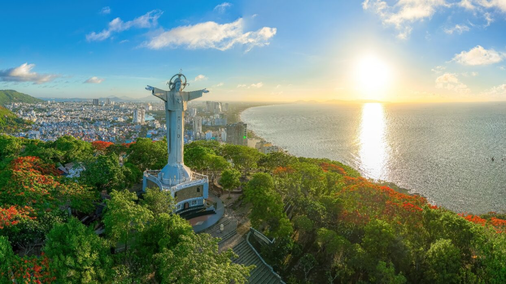

Giá từ: 2.690.000đ/người
🚗Vũng Tàu – thành phố biển gần Sài Gòn nhất – luôn là điểm đến lý tưởng cho những chuyến nghỉ ngắn ngày.
Chỉ cách TP.HCM khoảng 2 giờ di chuyển, du khách có thể tận hưởng không khí biển mát lành, tiếng sóng vỗ rì rào và khung cảnh bình yên.
Buổi sáng, tản bộ trên bãi Trước, bãi Sau, hay chinh phục tượng Chúa Kitô Vua trên núi Nhỏ để ngắm toàn cảnh thành phố.
Buổi chiều, gió biển lộng thổi, ánh hoàng hôn đỏ rực buông xuống mặt nước tạo nên khung cảnh lãng mạn khó quên.
Khi đêm buông xuống, Vũng Tàu lung linh trong ánh đèn rực rỡ, những hàng quán hải sản ven biển nhộn nhịp tiếng cười – tất cả tạo nên một thành phố biển vừa yên bình, vừa rộn ràng sức sống.